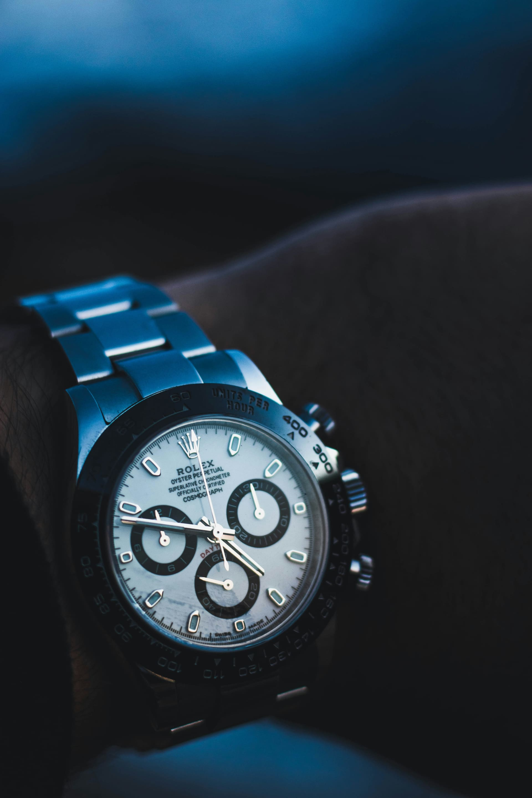

When Rolex launched its Certified Pre-Owned programme, it did something the brand had avoided for decades: it stepped directly into the second-hand market it had previously left to independent dealers. The pitch is simple and genuinely valuable — a used Rolex, authenticated by Rolex itself, fully serviced, and backed by a new two-year international guarantee, sold only through official retailers. The question buyers actually ask, though, is narrower and more practical: for the specific watch I want, is that worth paying more than the grey market charges? The answer is not a flat yes or no. It depends almost entirely on the model.
That's the part most coverage skips. The headline "around a 25% premium" figure is real on average, but averages hide the whole decision. On some references the CPO premium is so small it's a near-automatic yes; on others it's steep enough that you're paying handsomely for reassurance you barely need. This guide breaks it down the way a buyer should think about it — not "is CPO good?" but "is CPO worth it on this watch?"
HOW THE CPO PREMIUM ACTUALLY WORKS IN 2026
Rolex's programme certifies second-hand watches that are at least two years old, sold through participating official retailers and identifiable by a dedicated CPO plaque. Each watch is returned to Rolex's network, inspected component by component, serviced, and reissued with a two-year guarantee. The retailer absorbs the refurbishment cost and passes it on — which is the structural reason CPO sits above grey-market pricing.
Independent tracking has put the North America CPO premium at roughly 27% over non-certified pre-owned on average, but with an enormous spread by model — from around 18% at the low end to about 42% at the high end. Just as important, the gap has been narrowing as the programme has expanded from a single jeweller to a network of more than 150 retailers worldwide; on at least one tracked reference the CPO-to-grey-market gap has compressed to around 10%, less than half its 2023 level. The direction of travel matters: CPO is becoming more competitive over time, not less.
The right question isn't "is Certified Pre-Owned worth it?" It's "is it worth it on the watch I'm actually buying?" — because the premium swings from trivial to substantial depending on the reference.
THE CORE LOGIC — WHERE CPO IS WORTH IT, AND WHERE IT ISN'T
Once you see the model-by-model spread, a clear pattern emerges. The premium is steepest, in percentage terms, on the models that already sell at or below retail on the open market — the classic dress references. On those, you're layering a large certification premium on top of a watch that wasn't expensive or risky to buy in the first place. The premium is smallest on the hyped steel sports models, where grey-market prices are already inflated well above retail and the certainty Rolex provides is worth proportionally more.

Rolex Cosmograph Daytona — a hyped steel sports model, where the CPO premium tends to be smallest
CPO PREMIUM BY MODEL — INDICATIVE 2026 FIGURES
The table below shows the approximate CPO premium over comparable non-certified pre-owned examples, drawn from independent secondary-market tracking. Treat these as directional, not exact: published CPO data is concentrated among a handful of large retailers and represents only a small slice of total secondary inventory, so the real picture for any given watch varies with condition, configuration and where you look.
| Model | Buyer Profile | Approx. CPO Premium |
|---|---|---|
| Submariner | Hyped steel sports | Lower |
| GMT-Master II | Hyped steel sports | Lower–mid |
| Daytona | Hyped steel sports | Among the lowest |
| Sea-Dweller | Sports / tool | ~18% (smallest tracked) |
| Datejust | Dress / everyday | ~40% (steep) |
| Date / Air-King | Entry / everyday | ~40% (steep) |
| Milgauss | Discontinued niche | ~42% (largest tracked) |
| Programme average | All models | ~27% |
Premiums are expressed relative to comparable non-certified pre-owned examples and reflect the most recent independent tracking available. Prices move; always check a live source for the exact reference before buying.
WHAT YOU ARE ACTUALLY PAYING FOR
It helps to be precise about what the premium buys, because it's narrower than the marketing implies. You're paying for three concrete things: Rolex's own authentication of the watch (only Rolex can definitively confirm a Rolex is genuine), a full service bringing it to current performance standards, and a fresh two-year international guarantee. In a market increasingly troubled by high-quality counterfeits and "franken-watches" assembled from mixed parts, that authentication has real value — and it's worth most on the references most often faked.
What you're not necessarily getting is a better watch or a better long-term store of value than a clean, well-documented grey-market example with box and papers. A CPO watch is not a distinct collectible tier; it's a standard pre-owned Rolex with a certificate and a warranty. For a careful buyer working with a reputable dealer and full documentation, the incremental protection may be modest. For a first-time buyer, or anyone buying a high-value sports reference sight-unseen, it can be the difference between confidence and an expensive mistake.
Compare Sources
See CPO, authorised and grey-market options side by side
63 verified dealers · worldwide · all major maisons
HOW TO DECIDE — A QUICK FRAMEWORK
Run your watch through four questions. First: does this reference trade above or below retail on the grey market? If it's well above (the hyped sports models), the CPO premium is proportionally smaller and the protection more valuable. Second: how confident are you in your own ability to vet condition and authenticity? The less confident, the more CPO is worth. Third: how is the watch documented? A grey example with full box, papers and service history closes much of the gap CPO is designed to fill. Fourth — and this is the one most people skip — what is the actual premium today, for your exact reference, from a live price source? That number, not the average, is the decision.
Used well, CPO is neither a rip-off nor an automatic win. It's a paid insurance policy on a specific watch — and like any insurance, it's worth most precisely when the thing you're protecting is expensive and the risk of getting it wrong is real.
Watch Finder
Source the Rolex reference you want across global dealers
Authorised · CPO · grey market · auction